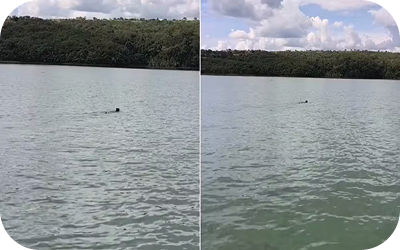
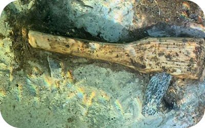
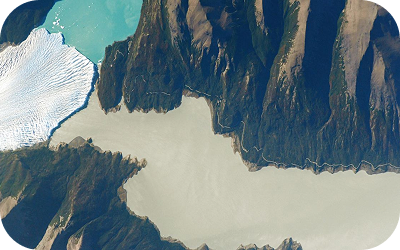
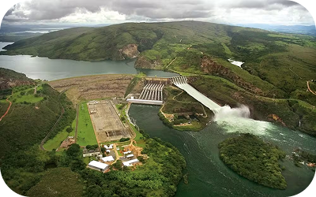
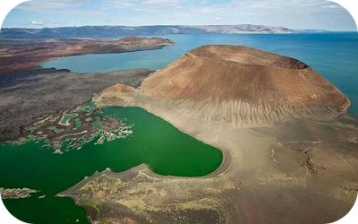

Guia de pesca registra animais atravessando a água em Abadiânia, eles seguiram para a mata sem contato humano;

Machado neolítico raro é encontrado preservado na Suíça. Com o cabo de madeira preservado;

Imagem da NASA mostra o encontro entre o Perito Moreno, o Lago Argentino e o Brazo Rico na Patagônia argentina;

Lago de Furnas, criado nos anos 1960, regula o sistema elétrico e abriga áreas submersas de cidades mineiras;

O aumento do Lago Turkana isola comunidades da etnia El Molo, reduz a pesca e ameaça a identidade tradicional;